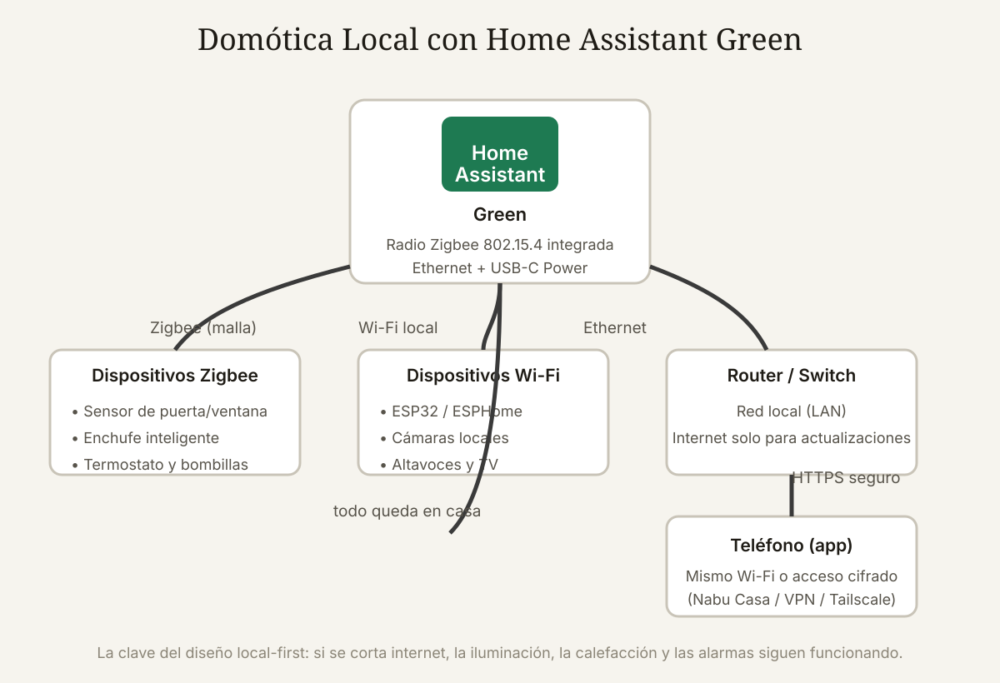

Qué cubre esta guía
- Qué es la domótica local y por qué importa
- Qué es Home Assistant
- El hardware: Home Assistant Green
- Primeros pasos: del desembalaje a la primera luz
- Protocolos: Zigbee, Z-Wave, Wi-Fi y Matter
- Dispositivos recomendados para empezar
- Automatizaciones: ejemplos YAML
- Escenarios completos
- Seguridad, privacidad y respaldos
- Limitaciones y alternativas
- Conclusión
- Preguntas frecuentes
Qué es la domótica local y por qué importa
La mayoría de los sistemas de casa inteligente comerciales funcionan así: tu sensor envía datos a un servidor en la nube del fabricante, ese servidor procesa la automatización y devuelve la orden al dispositivo. Esto tiene tres costos que casi nadie explica al comprar:
- Dependencia de internet: si se cae tu conexión, las bombillas "inteligentes" dejan de obedecer a los horarios y las alarmas pierden su lógica.
- Privacidad: tus horarios de sueño, presencia y rutinas pasan por servidores de terceros, sujetos a los términos del fabricante (y a veces a sus filtraciones).
- Obsolescencia forzada: cuando el fabricante cierra el servicio o cambia la app, tu hardware deja de funcionar aunque siga perfecto.
La domótica local-first invierte el modelo: un hub en tu casa ejecuta las automatizaciones, los dispositivos le hablan directamente a ese hub, y la nube solo se usa si tú decides usarla (por ejemplo, para acceso remoto cifrado). Internet se cae y la casa sigue funcionando; el fabricante cierra y el hardware sigue vivo porque lo controla software abierto.
Qué es Home Assistant
Home Assistant es un software de automatización del hogar de código abierto que integra más de 2.500 marcas y servicios bajo un mismo panel: Zigbee, Z-Wave, Wi-Fi, Matter, Thread, ESPHome, MQTT, cámaras, energía, clima y casi cualquier protocolo que exista. Todo se controla desde una interfaz web local y una app móvil.
Sus características centrales:
- Local por defecto: la lógica (automatizaciones, paneles, historial) corre en el dispositivo que lo ejecuta, no en la nube.
- Ecosistema integrador: en lugar de tener cinco apps (una por fabricante), un solo panel une todo y permite que dispositivos de marcas distintas se hablen entre sí.
- Comunidad enorme: miles de integraciones mantenidas por la comunidad, documentación extensa y un mercado de add-ons (ESPHome, Node-RED, Frigate) que amplían las capacidades.
- Sin suscripción obligatoria: el núcleo es gratuito; la empresa que lo desarrolla (Nabu Casa) se financia con una suscripción opcional de acceso remoto, a la que puedes renunciar y usar tu propia VPN.
Históricamente, ejecutar Home Assistant requería armar una Raspberry Pi o un mini-PC; la complejidad de la instalación era la barrera de entrada más grande para el público general.
El hardware: Home Assistant Green
El Home Assistant Green es el intento de la propia Nabu Casa de eliminar esa barrera: un dispositivo de producción propia, en caja de consumo, que ejecuta Home Assistant recién instalado. Sus características:
| Componente | Especificación |
|---|---|
| Procesador | Broadcom BCM2711 (4× Cortex-A72, 1,8 GHz) |
| Memoria | 4 GB LPDDR4 |
| Almacenamiento | 32 GB eMMC (con el sistema operativo preinstalado) |
| Radio Zigbee | Silicon Labs EFR32MG21 — Zigbee 3.0 / Thread, antena interna |
| Conectividad | Ethernet 10/100, USB-C (alimentación), 1× USB-A |
| Alimentación | Adaptador USB-C de 27 W incluido |
| Sistema | Home Assistant OS — arranca listo para usar |
Frente a armar tu propio hardware, el Green aporta tres ventajas concretas: el Zigbee viene integrado (con una Raspberry Pi necesitarías comprar un stick como el SkyConnect o el ConBee II), el sistema viene instalado (cero terminales y tarjetas SD), y el soporte lo da la misma organización que desarrolla el software. Es, en la práctica, el equivalente domótico de una consola frente a armar un PC: menos flexible, mucho más simple.
Primeros pasos: del desembalaje a la primera luz
El flujo de instalación está diseñado para resolverse en una tarde:
- Conecta y enciende: cable Ethernet al router y el adaptador USB-C. El Green arranca solo con Home Assistant OS.
- Descubre la instancia: abre
http://homeassistant.local:8123en el navegador (o la IP que te asigne el router). Se abre el asistente de incorporación. - Crea tu cuenta y nombre de casa: el asistente pide usuario, contraseña y datos de ubicación/hora. La ubicación se usa solo localmente para los cálculos de amanecer/atardecer.
- Configura la radio Zigbee: el asistente detecta el radio integrado (ZHA o Zigbee2MQTT). Con ZHA, presiona "incorporar dispositivo" y pon el sensor en modo de emparejamiento (normalmente 5 pulsaciones en el botón).
- Primera automatización guiada: desde Ajustes → Automatizaciones puedes crear una regla con asistente gráfico: "cuando se abra la puerta, encender la luz del pasillo".
Ese flujo guiado (asistente, emparejamiento Zigbee, automatización visual) es exactamente lo que antes requería leer tutoriales de instalación en Linux. El Green lo reduce a clics.
Protocolos: Zigbee, Z-Wave, Wi-Fi y Matter
Elegir el protocolo correcto define la confiabilidad y el precio de tu instalación:
| Protocolo | Frecuencia | Ventajas | Limitaciones |
|---|---|---|---|
| Zigbee 3.0 | 2,4 GHz (malla) | Barato, bajo consumo, red mallada, funciona sin internet | Alcance por nodo limitado; requiere coordinar la malla |
| Z-Wave | 868/908 MHz | Muy robusto, menos interferencia que 2,4 GHz | Más caro; certificación estricta |
| Wi-Fi | 2,4/5 GHz | Sin hub extra, enorme oferta | Consume más, satura la red, depende de tu router |
| Matter / Thread | 2,4 GHz (Thread) | Estándar abierto de la industria, interoperable | Ecosistema joven; requiere borde de Thread |
La recomendación práctica: Zigbee para sensores y actuadores de bajo consumo (el Green trae el radio listo), Wi-Fi para dispositivos que ya lo usan (bombillas, enchufes ESP) y Thread/Matter cuando el dispositivo lo ofrezca de forma nativa. Los dispositivos Wi-Fi chinos de bajo coste (Tuya) se pueden incorporar con localTuya o reemplazando su firmware con ESPHome si usan chip ESP — un tema amplio que merece su propio artículo.
Dispositivos recomendados para empezar
Con un presupuesto de 60–100 USD (además del hub) se monta una instalación real y útil:
| Dispositivo | Protocolo | Precio orientativo (USD) | Para qué |
|---|---|---|---|
| Sensor de puerta/ventana Aqara | Zigbee | 8–12 | Alarmas de intrusión, luces al abrir |
| Sensor de temperatura/humedad | Zigbee | 8–10 | Clima, aviso de humedad en baños |
| Enchufe inteligente con medición | Zigbee o Wi-Fi | 10–15 | Apagar standby, medir consumo |
| Bombilla Zigbee (A19 o GU10) | Zigbee | 8–12 | Iluminación regulable y color |
| Sensor de movimiento PIR | Zigbee | 10–15 | Luces por presencia, seguridad |
Compra primero un sensor de puerta y un enchufe, haz que funcionen con el asistente y deja una semana de uso real antes de expandir. La domótica se construye sobre hábitos observados, no sobre catálogos: lo que automatices debe salir de cómo vives, no de lo que el vendedor quiere venderte.
Automatizaciones: ejemplos YAML
Home Assistant permite automatizaciones visuales y también YAML, que es lo mismo con precisión quirúrgica. Una automatización tiene tres partes: trigger (qué lo dispara), condition (condiciones opcionales) y action (qué hacer).
alias: "Luz de pasillo al abrir la puerta (solo de noche)"
triggers:
- trigger: state
entity_id: binary_sensor.puerta_principal
to: "on"
conditions:
- condition: sun
after: sunset
- condition: state
entity_id: binary_sensor.casa_vacia
state: "off"
actions:
- action: light.turn_on
target:
entity_id: light.pasillo
data:
brightness_pct: 60
- action: timer.start
target:
entity_id: timer.luz_pasillo
data:
duration: "00:05:00"Otra clásica y de las más valiosas: apagar standby. Un enchufe con medición detecta cuando el televisor pasa a espera (consumo < 5 W durante 10 minutos) y corta el enchufe por completo, ahorrando los 8–15 W de standby durante 16 horas al día.
alias: "Cortar standby del TV"
triggers:
- trigger: numeric_state
entity_id: sensor.tv_potencia
below: 5
for: "00:10:00"
actions:
- action: switch.turn_off
target:
entity_id: switch.tv_enchufeEstas reglas se escriben, prueban y corrigen en el mismo panel; cada ejecución queda registrada en el historial con su duración y resultado, lo que facilita depurar por qué una automatización no disparó.
Escenarios completos
Con sensores básicos se construyen escenarios que cambian la experiencia de la casa:
- Presencia simulada: cuando no hay nadie, las luces encienden y apagan siguiendo horarios ligeramente aleatorios — disuasión de intrusos sin cámaras.
- Clima por habitación: un sensor de temperatura por pieza y válvulas termostáticas inteligentes (Zigbee) permiten calefaccionar solo las habitaciones ocupadas, con ahorros de energía típicos del 10–20 %.
- Alarma local: sensores de puerta y movimiento alimentan una sirena Zigbee y notifican al celular, todo sin depender de un servicio de alarma externo.
- Energía: con una pinza amperimétrica CT o medidores compatibles, el panel de energía de Home Assistant muestra consumo por dispositivo y por circuito en tiempo real.
La clave de estos escenarios es que comparten sensores: el mismo sensor de puerta alimenta la luz del pasillo, la alarma y la simulación de presencia, algo imposible de hacer con cinco apps de fabricantes distintos.
Seguridad, privacidad y respaldos
Domótica local no significa automáticamente segura; significa que la seguridad está en tus manos. Lo mínimo no negociable:
- Contraseña fuerte y 2FA en tu cuenta de Home Assistant; nunca expongas el puerto 8123 a internet directamente.
- Acceso remoto con cifrado: usa Nabu Casa (túnel cifrado gestionado, con suscripción opcional), una VPN (WireGuard) o Tailscale. Nunca reenvío de puertos sin protección.
- Actualizaciones: activa las actualizaciones automáticas del sistema; el software evoluciona rápido y cada versión corrige vulnerabilidades.
- Respaldos: configura los respaldos automáticos (diarios, cifrados) a un NAS o a la nube de tu preferencia; el Green guarda todo en su eMMC y un respaldo local es tu seguro contra fallos.
- Red separada (opcional pero recomendada): aísla los dispositivos IoT en una VLAN o red de invitados con firewall, de modo que una bombilla comprometida no llegue a tus computadores.
Limitaciones y alternativas
El Green no es la respuesta universal:
- Instalaciones grandes o exigentes: con muchas cámaras (Frigate con detección por IA), decenas de dispositivos y paneles pesados, conviene más un mini-PC con más CPU y RAM (un Intel N100 o similar), o el Home Assistant Yellow, que comparte diseño pero permite ampliar radio (Zigbee/Z-Wave) y memoria.
- Ethernet limitado: el Green trae 10/100 y un solo USB-A; si planeas cámaras PoE y discos, busca otro hardware.
- Zigbee 2.4 GHz: en casas con mucho Wi-Fi 2,4 GHz saturado, un hub con Z-Wave (868 MHz) puede ser más robusto — cosa que se resuelve añadiendo un stick Z-Wave por USB.
También puedes ejecutar Home Assistant en una Raspberry Pi 4/5, un NAS (Docker) o una máquina virtual, con el mismo software y cero coste de licencia. El Green brilla cuando quieres que simplemente funcione sin dedicar un fin de semana a instalarlo.
Conclusión
Home Assistant Green cierra la brecha que mantenía la domótica local fuera del alcance del público general: por primera vez, instalar un hub local-first con Zigbee integrado toma menos de una hora y no requiere conocimientos de Linux. Y al hacerlo, redefine la conversación sobre casa inteligente: de "qué app compro" a "qué reglas quiero para mi casa".
Empieza pequeño, con dos sensores y una automatización, mide los resultados reales y expande desde la experiencia. La casa inteligente más valiosa no es la que tiene más dispositivos, sino la que sigue funcionando cuando se corta internet.
Preguntas frecuentes
¿Necesito internet para que funcione Home Assistant Green?
No para su funcionamiento central. Las automatizaciones, los paneles, el historial y el control Zigbee corren localmente en el dispositivo: si se corta internet, las luces siguen obedeciendo los horarios y las alarmas siguen disparando. Internet solo se necesita para actualizar el sistema, descargar integraciones adicionales y, si lo configuras, el acceso remoto. Es justamente la diferencia fundamental frente a los hubs que dependen de la nube del fabricante.
¿Home Assistant Green incluye el Zigbee o hay que comprarlo aparte?
Lo incluye. El Green trae una radio Zigbee 3.0 / Thread integrada (chip Silicon Labs EFR32MG21) con antena interna, lista para emparejar dispositivos directamente desde el asistente de instalación. A diferencia de ejecutar Home Assistant en una Raspberry Pi, no necesitas comprar un stick USB como el SkyConnect o el ConBee II.
¿Puedo usar mis dispositivos Tuya, Xiaomi o IKEA con Home Assistant?
En la mayoría de los casos, sí. IKEA (TRÅDFRI), Aqara/Xiaomi, Philips Hue y muchas marcas usan Zigbee y se emparejan sin problemas con el radio del Green, perdiendo la dependencia del hub de la marca. Los dispositivos Wi-Fi Tuya se integran con localTuya o, si usan chips ESP, reemplazando su firmware con ESPHome. La base de datos de integraciones de Home Assistant documenta cada marca y el nivel de soporte; revísala antes de comprar para evitar sorpresas.
¿Qué pasa con mis datos? ¿Home Assistant vende mi información?
El proyecto es de código abierto y su empresa matriz, Nabu Casa, no vende datos: la información de tu casa vive en tu hardware y no sale de él salvo que configures servicios externos (nube de respaldo, integraciones de voz, etc.). La suscripción opcional de Nabu Casa es un servicio de túnel cifrado para acceso remoto, no un modelo de datos. Como con cualquier software, revisa las integraciones que instalas: algunas conectan con servicios en la nube del fabricante del dispositivo si tú las habilitas.
¿Cuántos dispositivos soporta Home Assistant Green?
No hay un límite publicado de dispositivos, y en la práctica un hogar típico (30–80 dispositivos entre Zigbee y Wi-Fi) funciona con holgura en el Green. El límite real está en tareas pesadas como visión por computadora con cámaras en tiempo real (Frigate), que saturan su CPU y RAM; para ese uso se recomienda un mini-PC con más recursos. La red Zigbee además no depende del hub: los routers de malla (enchufes conectados a red fija) extienden el alcance.
Este artículo es contenido editorial independiente: no contiene ubicaciones patrocinadas ni enlaces de afiliado. Si en futuras actualizaciones se agregan enlaces a proveedores de componentes, serán identificados explícitamente. El código y las conexiones son referenciales y deben adaptarse y probarse con tu propio hardware. Si detectas un error en esta guía, por favor avísanos.
Sigue aprendiendo
Si quieres empezar con una alternativa más flexible, mira el ESP32 con MQTT para controlar dispositivos propios, o lleva los datos de tus sensores a la nube con ThingSpeak.
Fuentes primarias y lecturas recomendadas
Referencias oficiales del proyecto Home Assistant y de los estándares de protocolos. Las especificaciones del hardware corresponden a la versión Green de Nabu Casa.
- Home Assistant Green — Página oficial del producto
- Home Assistant — Documentación de primeros pasos
- Home Assistant — Integración ZHA (Zigbee Home Automation)
- Connectivity Standards Alliance — Especificación Matter
- Nabu Casa — Servicios de Home Assistant y política de privacidad
- Anuncio oficial del Home Assistant Green
Enlaces revisados: 15 de agosto de 2026.